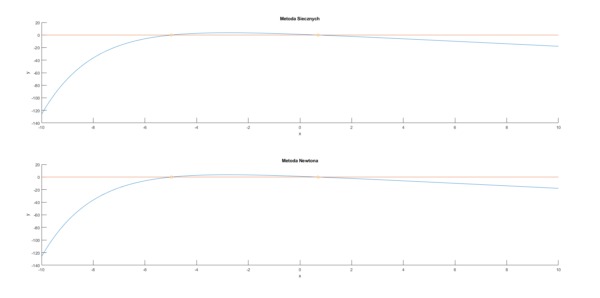
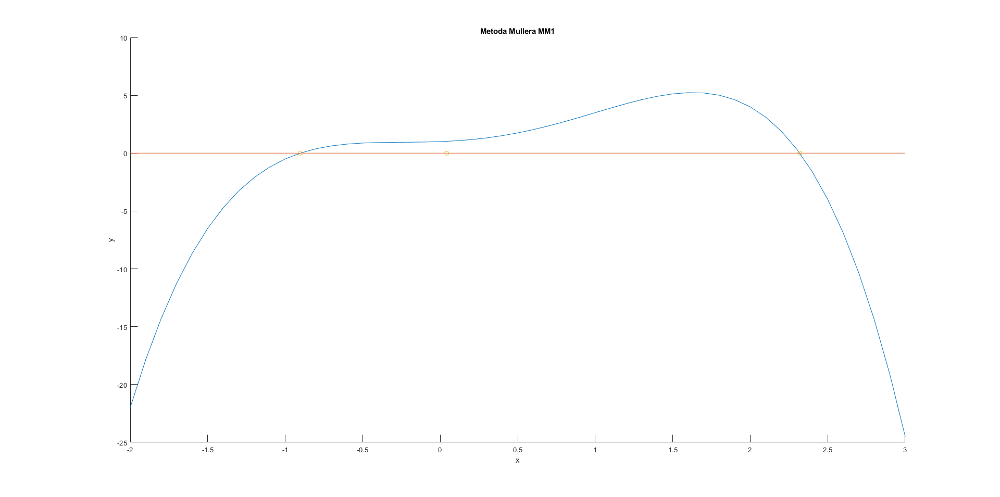

student: Bartłomiej Krawczyk
indeks: 310774
Proszę znaleźć wszystkie pierwiastki funkcji $f(x) = 2.1 - 2x - e^{-x/2}$ w przedziale $[10, -10]$ używając dla każdego zera:
a) własnego solwera z implementacją metody siecznych
b) podanego na stronie przedmiotu solwera newton.m z implementacją metody Newtona
$$ f(x) = 2.1 - 2x - e^{-x/2} $$
function y = function1(x)
y = 2.1 - 2 * x - exp(-x / 2);
end
W metodzie siecznych prowadzimy sieczną zawsze między dwoma ostatnio wyznaczonymi punktami. Nie dbamy przy tym o zachowanie przedziału izolacji pierwiastka.
W celu wyznaczenia kolejnego punktu wyznaczamy miejsce przecięcia siecznej z prostą $y=0$. Liczymy to korzystając z podobieństwa trójkątów prostokątnych: $$ \frac{f(x_n) - f(x_{n-1})}{x_n - x_{n-1}} = \frac{f(x_n) - 0}{x_n - x_{n + 1}} $$ wyznaczając $x_{n+1}$ otrzymujemy: $$ x_{n+1} = x_n - \frac{f(x_n)(x_n - x_{n-1})}{f(x_n) - f(x_{n-1})} = \frac{x_{n-1}f(x_n) - x_n f(x_{n-1})}{f(x_n) - f(x_{n-1})} $$
function [xf, ff, iexe, texe] = secant(f, x, delta, imax)
%
% CEL
% Poszukiwanie pierwiastka funkcji jednej zmiennej
% metoda siecznych
%
% PARAMETRY WEJSCIOWE
% f - funkcja dana jako wyrazenie
% x - przedział początkowy
% delta - dokladnosc
% imax - maksymalna liczba iteracji
%
% PARAMETRY WYJSCIOWE
% xf - rozwiazanie
% ff - wartosc funkcji w xf
% iexe - liczba iteracji wykonanych
% texe - czas obliczen [s]
tic;
i = 0;
x0 = min(x);
x1 = max(x);
fx0 = feval(f,x0);
fx1 = feval(f, x1);
while abs(fx1) > delta && i < imax
i = i + 1;
[x0, fx0, x1, fx1] = nextVal(f, x0, fx0, x1, fx1);
end
texe = toc;
iexe = i;
xf = x1;
ff = fx1;
end
function [x0, fx0, x1, fx1] = nextVal(f, x0, fx0, x1, fx1)
x = (x0 * fx1 - x1 * fx0) / (fx1 - fx0);
x0 = x1;
fx0 = fx1;
x1 = x;
fx1 = feval(f, x1);
end
Metoda Newtona (stycznych), aproksymuje funkcję korzystając z jej liniowego przybliżenia. Wylicza je poprzez ucięcie rozwinięcia w szereg Taylora w aktualnym punkcie $x_n$
$$ f(x) \approx f(x_n) + f'(x_n)(x - x_n) $$
Kolejny punkt $x_{n+1}$ jest wyliczany z przyrównania do zera aproksymacji liniowej funkcji $f(x)$:
$$ f(x_n) + f'(x_n)(x_{n+1} - x_n) = 0 $$
wyznaczając $x_{n+1}$ otrzymujemy:
$$ x_{n+1} = x_n - \frac{f(x_n)}{f'(x_n)} $$
function [xf, ff, iexe, texe] = newton(f, x0, delta, imax)
%
% CEL
% Poszukiwanie pierwiastka funkcji jednej zmiennej
% metoda Newtona (stycznych)
%
% PARAMETRY WEJSCIOWE
% f - funkcja dana jako wyrazenie
% x0 - punkt poczatkowy
% delta - dokladnosc
% imax - maksymalna liczba iteracji
%
% PARAMETRY WYJSCIOWE
% xf - rozwiazanie
% ff - wartosc funkcji w xf
% iexe - liczba iteracji wykonanych
% texe - czas obliczen [s]
%
% PRZYKLADOWE WYWOLANIE
% >> [xf, ff, iexe, texe] = newton(@ (x) sin(x), 2, 1e-8, 100)
%
syms X
% obliczenie pochodnej reprezentowanej jako funkcja anonimowa
df = matlabFunction(diff(f(X), X));
tic;
i = 0;
x = x0;
fx = feval(f,x);
while abs(fx) > delta && i < imax
i = i + 1;
% iteracyjne obliczanie nowego przyblizenia pierwiastka
x = x - fx/df(x);
fx = feval(f, x);
end
texe = toc;
iexe = i;
xf = x;
ff = fx;
end
function plot_2_1()
x = -10 : 0.1 : 10;
f = @ (x) function1(x);
delta = 1e-8;
imax = 100;
y = f(x);
tiledlayout(2, 1);
nexttile;
hold on;
title('Metoda Siecznych');
xlabel('x');
ylabel('y');
plot(x, y);
plot(x, zeros(length(x), 1));
[xf, ff] = zerosSecant(f, [-10 : 1 : 0; 0 : 1 : 10]', delta, imax);
scatter(xf, ff);
hold off;
fprintf('\n');
nexttile;
hold on;
title('Metoda Newtona');
xlabel('x');
ylabel('y');
plot(x, y);
plot(x, zeros(length(x), 1));
[xf, ff] = zerosNewton(f, -10 : 2 : 10, delta, imax);
scatter(xf, ff);
hold off;
end

Program
function [x, y] = zerosSecant(f, pp, delta, imax)
[n, ~] = size(pp);
x = zeros(n, 1);
y = zeros(n, 1);
fprintf('pp\t\t\t\t\t\t|\tf(pp)\t\t\t\t\t|\tpk\t\t\t|\tf(pk)\t\t\t|\tIterations\t|\tTime\n');
fprintf('-\t\t\t\t\t\t|\t-\t\t\t\t\t\t|\t-\t\t\t|\t-\t\t\t\t|\t-\t\t\t|\t-\n');
for i = 1 : n
[xf, ff, iexe, texe] = secant(f, pp(i, :), delta, imax);
x(i) = xf;
y(i) = ff;
fprintf('[%f, %f]\t|\t[%f, %f]\t|\t%f\t|\t%.10f\t|\t%.0f\t\t\t|\t%f s\t\n', ...
[pp(i, 1), pp(i, 2), f(pp(i, 1)), f(pp(i, 2)), xf, ff, iexe, texe]);
end
end
Wynik
| pp | f(pp) | pk | f(pk) | Iterations | Time |
|---|---|---|---|---|---|
| [-10.000000, 0.000000] | [-126.313159, 1.100000] | 0.697154 | -0.0000000008 | 5 | 0.000016 s |
| [-9.000000, 1.000000] | [-69.917131, -0.506531] | 0.697154 | -0.0000000000 | 5 | 0.000009 s |
| [-8.000000, 2.000000] | [-36.498150, -2.267879] | 0.697154 | -0.0000000090 | 5 | 0.000003 s |
| [-7.000000, 3.000000] | [-17.015452, -4.123130] | 0.697154 | -0.0000000000 | 6 | 0.000003 s |
| [-6.000000, 4.000000] | [-5.985537, -6.035335] | NaN | NaN | 4 | 0.000002 s |
| [-5.000000, 5.000000] | [-0.082494, -7.982085] | -4.979683 | -0.0000000001 | 7 | 0.000003 s |
| [-4.000000, 6.000000] | [2.710944, -9.949787] | 0.697154 | 0.0000000000 | 7 | 0.000003 s |
| [-3.000000, 7.000000] | [3.618311, -11.930197] | 0.697154 | -0.0000000000 | 6 | 0.000003 s |
| [-2.000000, 8.000000] | [3.381718, -13.918316] | 0.697154 | -0.0000000000 | 6 | 0.000003 s |
| [-1.000000, 9.000000] | [2.451279, -15.911109] | 0.697154 | 0.0000000004 | 5 | 0.000002 s |
| [0.000000, 10.000000] | [1.100000, -17.906738] | 0.697154 | 0.0000000000 | 5 | 0.000002 s |
Program
function [x, y] = zerosNewton(f, pp, delta, imax)
n = length(pp);
x = zeros(n, 1);
y = zeros(n, 1);
fprintf('pp\t\t\t|\tf(pp)\t\t|\tpk\t\t\t|\tf(pk)\t\t\t|\tIterations\t|\tTime\n');
fprintf('-\t\t\t|\t-\t\t\t|\t-\t\t\t|\t-\t\t\t\t|\t-\t\t\t|\t-\n');
for i = 1 : n
[xf, ff, iexe, texe] = newton(f, pp(i), delta, imax);
x(i) = xf;
y(i) = ff;
fprintf('%f\t|\t%f\t|\t%f\t|\t%.10f\t|\t%.0f\t\t\t|\t%f s\t\n', [pp(i), f(pp(i)), xf, ff, iexe, texe]);
end
end
Wynik
| pp | f(pp) | pk | f(pk) | Iterations | Time |
|---|---|---|---|---|---|
| -10.000000 | -126.313159 | -4.979683 | -0.0000000005 | 7 | 0.000013 s |
| -8.000000 | -36.498150 | -4.979683 | -0.0000000000 | 6 | 0.000009 s |
| -6.000000 | -5.985537 | -4.979683 | -0.0000000000 | 5 | 0.000012 s |
| -4.000000 | 2.710944 | -4.979683 | -0.0000000001 | 5 | 0.000009 s |
| -2.000000 | 3.381718 | 0.697154 | -0.0000000000 | 5 | 0.000010 s |
| 0.000000 | 1.100000 | 0.697154 | -0.0000000004 | 3 | 0.000008 s |
| 2.000000 | -2.267879 | 0.697154 | -0.0000000021 | 3 | 0.000009 s |
| 4.000000 | -6.035335 | 0.697154 | -0.0000000000 | 4 | 0.000016 s |
| 6.000000 | -9.949787 | 0.697154 | -0.0000000000 | 4 | 0.000025 s |
| 8.000000 | -13.918316 | 0.697154 | -0.0000000000 | 4 | 0.000012 s |
| 10.000000 | -17.906738 | 0.697154 | -0.0000000000 | 4 | 0.000009 s |
Obie metody poradziły sobie ze znalezieniem miejsc zerowych funkcji. Obie metody znalazły miejsce zerowe w podobnej liczbie iteracji. Metoda siecznych jest minimalnie szybsza jeśli chodzi o czas wykonania.
Metoda siecznych może zawieść gdy:
Metoda Newtona może zawieść gdy:
Używając metody Müllera MM1 proszę znaleźć wszystkie pierwiastki wielomianu czwartego stopnia:
$$ f(x) = a_4x^4 + a_3x^3 + a_2x^2 + a_1x + a_0 $$
$$ \begin{bmatrix} a_4 & a_3 & a_2 & a_1 & a_0\\ \end{bmatrix} \begin{bmatrix} -1 & 1.5 & 1.5 & 0.5 & 1\\ \end{bmatrix} $$function y = horner(a, x)
n = length(a) - 1;
y = repmat(a(1), size(x));
for i = 2 : n + 1
y = y .* x + a(i);
end
end
Kolejne iteracje bazują na trzech ostatnich punktach: $x_0, x_1, x_2$. Gdzie zakładamy, że $x_2$ to ostatnie przybliżenie pierwiastka $\alpha$.
Przez te punkty prowadzimy parabolę, a kolejne przybliżenia $\alpha$ wyznaczamy korzystając z wyliczonego pierwiastka paraboli.
W celu wyliczenia paraboli $y(z) = az^2 + bz + c$ wprowadzamy zmienną przyrostową $z$. $$ z = \begin{bmatrix} x_0 - x_2 \\ x_1 - x_2 \\ 0 \end{bmatrix} $$
Dalej rozwiązujemy układ równań z 3 niewiadomymi (a, b, c):
$$ az_0^2 + bz_0 + c = y(z_0) = f(x_0) \\ az_1^2 + bz_1 + c = y(z_1) = f(x_1) \\ c = y(z_2) = f(x_2) $$
I kolejno wyznaczamy wzory dla parametrów paraboli:
$$ c = f(x_2) $$
Podstawiamy wyliczone $c$ do układu równań.
$$ az_0^2 + bz_0 = f(x_0) - f(x_2) \\ az_1^2 + bz_1 = f(x_1) - f(x_2) $$
Aby uprościć wzory wprowadzam jeszcze jedną zmienną $p$: $$ p = \begin{bmatrix} f(x_0) - f(x_2) \\ f(x_1) - f(x_2) \end{bmatrix} $$
I wyliczamy wzór na b oraz a: $$ b = \frac{z_0^2 p_1 - p_0 z_1^2}{z_0 z_1 (z_0 - z_1)} $$
$$ a = \frac{z_1 p_0 - p_1 z_1}{z_0 z_1 (z_0 - z_1)} $$
Przez te trzy punkty prowadzimy parabolę, a do kolejnego przybliżenia $\alpha$ bierzemy pierwiastek paraboli o mniejszym module:
$$ x_3 = x_2 + z_{min} $$
gdzie $z_{min}$ wyliczamy:
$$ \begin{equation} z_{min} = \begin{cases} \frac{-2c}{b+\sqrt{b^2-4ac}}, & \text{dla $|b+\sqrt{b^2-4ac}|\ge |b-\sqrt{b^2-4ac}|$}\\ \frac{-2c}{b-\sqrt{b^2-4ac}}, & \text{w pozostałych przypadkach} \end{cases} \end{equation} $$
W kolejnej iteracji odrzucamy spośród $x_0, x_1, x_2$ punkt położony najdalej od ostatnio wyznaczonego przybliżenia $x_3$.
Program
function [xf, ff, iexe, texe] = mm1(a, x, delta, imax)
%
% CEL
% Poszukiwanie pierwiastka wielomianu
% metoda Mullera MM1
%
% PARAMETRY WEJSCIOWE
% a - wektor współczynników wielomianu
% x - wektor wartości początkowych - 3-elementowy
% delta - dokladnosc
% imax - maksymalna liczba iteracji
%
% PARAMETRY WYJSCIOWE
% xf - rozwiazanie
% ff - wartosc funkcji w xf
% iexe - liczba iteracji wykonanych
% texe - czas obliczen [s]
tic;
i = 0;
x0 = x(1);
x1 = x(2);
x2 = x(3);
fx0 = horner(a, x0);
fx1 = horner(a, x1);
fx2 = horner(a, x2);
while abs(fx2) > delta && i < imax
i = i + 1;
[x0, fx0, x1, fx1, x2, fx2] = nextVal(a, x0, fx0, x1, fx1, x2, fx2);
end
texe = toc;
iexe = i;
xf = x2;
ff = fx2;
end
function [x0, fx0, x1, fx1, x2, fx2] = nextVal(a, x0, fx0, x1, fx1, x2, fx2)
% Wyliczanie współczynników funkcji kwadratowej
z = [x0 - x2; x1 - x2]; % zmienne przyrostowe
p = [fx0 - fx2; fx1 - fx2]; % zmienna pomocnicza - prawa strona układu równań
C = fx2;
m = (z(1, 1) * z(2, 1) * (z(1, 1) - z(2, 1)));
B = (z(1, 1)^2 * p(2, 1) - p(1, 1) * z(2, 1)^2) / m;
A = (z(2, 1) * p(1, 1) - p(2, 1) * z(1, 1)) / m;
% Wyliczanie pierwiastków funkcji kwadratowej
s = sqrt(B ^ 2 - 4 * A * C);
d_p = B + s;
d_m = B - s;
z_p = -2 * C / (d_p);
z_m = -2 * C / (d_m);
% Wyliczenie kolejnego przybliżenia pierwiastka funkcji
if (abs(d_p) >= abs(d_m))
z_min = z_p;
else
z_min = z_m;
end
x3 = x2 + z_min;
% Odrzucenie jednego z dotychczasowych punktów x0, x1 lub x2
% (punktu najdalej położonego od x3)
X = [x0, fx0, abs(x3 - x0);
x1, fx1, abs(x3 - x1);
x2, fx2, abs(x3 - x2)];
[~, idx] = max(X(:, 3));
X(idx, :) = [];
x0 = X(1, 1);
fx0 = X(1, 2);
x1 = X(2, 1);
fx1 = X(2, 2);
x2 = x3;
fx2 = horner(a, x2);
end
Jesteśmy w stanie zapisać wielomian w postaci iloczynu $(x-\alpha)$ oraz pewnej funkcji $Q(x)$, która jest wielomianem o stopień niższym niż funkcja $f(x)$. $$ f(x) = a_n x^n + a_{n-1} x^{n-1} + ... + a_1 x + a_0 = (x - \alpha)Q(x) $$
Gdzie $\alpha$ to pierwiastek funkcji $f(x)$, a $Q(x)$: $$ Q(x) = q_n x^{n-1} + ... + q_2 x + q_1 $$
Wyznaczamy $Q(x)$ korzystając ze schematu Hornera:
$$ q_{n+1} \stackrel{def}{=} 0 $$
$$ q_{i} = a_i + q_{i+1}\alpha \\ \text{gdzie} \ i = 0, 1, ..., n - 1 $$
Program
function q = divHorner(a, alpha)
n = length(a);
q = zeros(n - 1, 1);
q(1) = a(1);
for i = 2 : n - 1
q(i) = a(i) + q(i - 1) * alpha;
end
end
Następnie jesteśmy w stanie dalej liczyć pierwiastki funkcji $Q(x)$, które będą również pierwiastkami funkcji $f(x)$. Postępujemy tak do osiągnięcia wszystkich pierwiastków, za każdym razem wyliczając pierwiastki dla wielomianu niższego stopnia.
Program
function [xf, ff, iexe, texe] = allMM1(a, x, delta, imax)
%
% CEL
% Poszukiwanie wszystkich pierwiastków wielomianu
% metoda Mullera MM1
%
% PARAMETRY WEJSCIOWE
% a - wektor współczynników wielomianu
% x - wektor wartości początkowych - 3-elementowy
% delta - dokladnosc
% imax - maksymalna liczba iteracji
%
% PARAMETRY WYJSCIOWE
% xf - rozwiazania
% ff - wartosci funkcji w xf
% iexe - liczba iteracji wykonanych dla każdego rozwiązania
% texe - czas obliczen [s] każdego rozwiązania
n = length(a) - 1;
xf = zeros(n, 1);
ff = zeros(n, 1);
iexe = zeros(n, 1);
texe = zeros(n, 1);
for i = 1 : n - 1
[xf1, ff1, iexe1, texe1] = mm1(a, x, delta, imax);
a = divHorner(a, xf1);
xf(i) = xf1;
ff(i) = ff1;
iexe(i) = iexe1;
texe(i) = texe1;
end
tic;
xf(n) = -a(2) / a(1);
ttmp = toc;
ff(n) = horner(a, xf(n));
iexe(n) = 0;
texe(n) = ttmp;
end
Program
function plot_2_2()
x = -2 : 0.1 : 3;
a = [-1 1.5 1.5 0.5 1];
pp = [-2, 3, 0];
delta = 1e-8;
imax = 100;
y = horner(a, x);
hold on;
title('Metoda Mullera MM1');
xlabel('x');
ylabel('y');
plot(x, y);
plot(x, zeros(length(x), 1));
[xf, ff, iexe, texe] = allMM1(a, pp, delta, imax);
scatter(xf, ff);
hold off;
fprintf('x\t\t\t\t\t|\tf(x)\t\t\t\t|\tIterations\t|\tTime\n');
fprintf('-\t\t\t\t\t|\t-\t\t\t\t\t|\t-\t\t\t|\t-\n');
for i = 1 : length(xf)
fprintf('%f%+fj\t|\t%f%+fj\t|\t%.0f\t\t\t|\t%f s\n', ...
[real(xf(i)), imag(xf(i)), real(ff(i)), imag(ff(i)), iexe(i), texe(i)]);
end
end
Wykres:

Uwaga: Na wykresie jest tylko pokazana część rzeczywista rozwiązania
Warning: Using only the real component of complex data.
> In matlab.graphics.chart.internal.getRealData (line 52)
In scatter>matrixScatter (line 163)
In scatter (line 58)
In plot_2_2 (line 17)
Tabela:
| x | f(x) | Iterations | Time |
|---|---|---|---|
| -0.903510+0.000000j | -0.000000+0.000000j | 9 | 0.000837 s |
| 0.041916+0.689475j | -0.000000-0.000000j | 6 | 0.000414 s |
| 0.041916-0.689475j | 0.000000+0.000000j | 1 | 0.000077 s |
| 2.319678+0.000000j | 0.000000+0.000000j | 0 | 0.000196 s |
Metoda Mullera MM1 dobrze poradziła sobie ze znajdowaniem wszystkich pierwiastków wielomianu, nawet tych zespolonych.
Najwięcej iteracji wymagało pierwsze rozwiązanie dla wielomianu 4 stopnia. W przypadku wielomianu 2 stopnia od
razu policzony został jeden z pierwiastków. Wielomian 1 stopnia policzyłem bez korzystania z funkcji
mm1, ponieważ można to rozwiązać jednym dzieleniem.